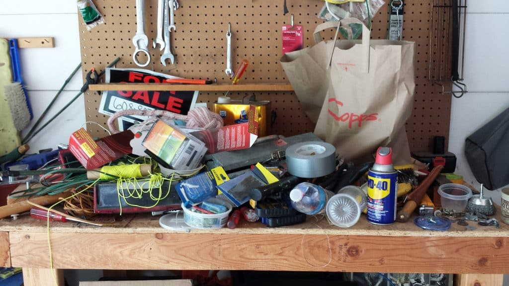

Canvas
A couple of things that you need to know.
The course is a work in progress. You might find some errors. If something doesn't make sense, let me know. I've heard students express concern about calling out teachers on their mistakes. I'm asking you to help me review the course materials for your- and future class's benefit. The curriculum is built and tested, but I'm in the process of reformatting and refactoring. The templates all seem to be in good shape now, but I am still migrating some of the content. If you notice material passed module 1 is still 'locked,' be assured I am working on releasing all of the content as soon as possible.
If you notice that some of the material is temporarily locked for your use in Canvas, or links don't work, please ask! If you have questions about what's coming up, please ask. I'm happy to visit during office hours, or leave a note in the class Discord channel. Of course email works too, but if you have the question, chances are others do too.
Projects
This course is about building something.
But more importantly, about how to build something. Each individual and team project that you undertake will be tailored to its own set of processes. The steps that we walk through for this project are typical and representational, but not universal.
We'll build some artifacts and ultimately be staging project progress, documents, and status updates on GitHub. During the course, these will be staged on a public repository, visible to me and to others. As a software developer, a link to your GitHub repositories is likely part of your resume (or CV).
Works in progress
I am very fortunate to have a variety of workspaces at my home. With the kids grown and gone, my wife and I enjoy a dedicated office space where both work. I'm very thankful to have gotten our desks set up, monitors and workstations configured to our needs. I know that many, especially during COVID, work from home on kitchen tables and living room couches with kids or roommates walking though these shared space.
Down the hall, we have a 3-car garage. In addition to our cars (yes, we actually park in it), we have workbenches and craft countertops arranged around different work areas. In full disclosure, one of my so-called workbenches collects stuff. I haven't seen that countertop in years. But at least a couple of the workspaces in my garage are routinely cleared off, tools put away and available when new projects come in the door. Sometimes I have circuit boards torn apart and a soldering and wiring station is set up. Currently I'm working on a bathroom remodel, and last week I had plumbing parts spread out while I was assembling and soldering the copper fittings that were installed in the new shower. When the radiator on my car decided it had had enough, there was a space available to organize parts and tools until the car repair was complete. Sometimes it's welding, sometimes it's cabinetry, sometimes it's lawnmower repair, sometimes sailboat rigging.
If you visit my garage today, you'll see (at least) 1 car, 1 motorcycle, 3 bicycles, and for this week, my wife's car is parked out in the driveway because I have several large plywood storage boxes in various stages of being painted before they get put away. These are storage crates for Christmas decorations. I'll get those done soon. But there are also other projects in progress on a couple of workbenches. This is my garage. In addition to parking cars, it's a workspace, not a showroom.
The point is at any time I may have several projects in progress. And, they are much easier to accomplish when each has its own work and staging area.

Ridiculous.
Once upon a time, the web was littered with pages like this. I cringed a little posting it, but trust me that this was shared as tongue-in-cheek poking fun at myself. Shouldn't all pages be in-progress all the time? Isn't the dynamic nature of online content the reason we don't still have store catalogs mailed to our homes every 6 months?
GitHub
That is what GitHub is for.
git
git was created by Linus Torvalds. Yes, that Linus Torvalds. They say that necessity is the mother of invention. Incidentally, this is a paraphrase from Plato's Republic from 2400 years ago. Being one of the founding proponents of open source software, he needed a better tool for managing collaborative work on many projects. GitHub was created as a web-based API to host a git server. For our purposes, think of it as an extra workbench, or several, where we can stage and work on projects.
Why is that important? I've had many students express concern about having their project repositories public. I've heard complaints such as, it's not ready to be shared with others yet.
or
It's not finished.
Again, it's a workbench

found on the web. this is not my workbench.
GitHub is a workspace, not a showroom. Use it to collect objects while you are building them, not when they are finished. Together, we will try to keep them ordered and organized.
I have well over 100 GitHub repositories. Some are public, most are not. Some are forgotten and abandoned projects. Sometimes I revisit and delete or merge them with others. Like my garage, some workbenches I haven't looked at in a very long time.